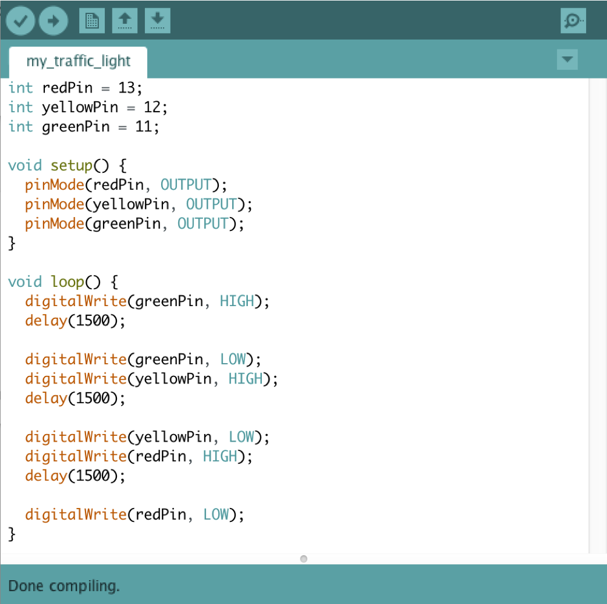

The Traffic Jam
Momou was riding his car to Karkhana yesterday to a very important meeting when he suddenly reached a crossroad with no policeman guiding the traffic.
It turns out the policeman had gotten flu and the whole area had become one big traffic jam!
Will you help end the traffic so Momou can reach Karkhana on time?
1. Select the materials you will need!
Click the buttons!
2. Connect the Arduino to the Breadboard
Make sure 5V is connected to + with the red wire and GND is connected to - with the black wire.
Drag and drop the cables!


3. Connect leds to breadboard and arduino
Drag and drop the objects!
4. Write your code
When you are done, connect to your computer!
Congratulations, you are done with your first circuit!
Momou is incredibly grateful because you finally took him out of the traffic!
About
Arantza, Laine and Mateo are students at New York University Abu Dhabi. They are taking a class Making Education, which is a part of the Interactive Media program at NYUAD and collaborates with an education company Karkhana, based in Kathmandu, Nepal. Karkhana’s vision is to create an environment that promotes self-directed and project-based learning to introduce children to technology through interactive workshops. Their principle “Think, Make, Play, Improve” is implemented in every aspect of their model, and corresponds to the Interactive Media program’s vision at NYUAD, making this collaboration a great opportunity for experiential learning for both sides.
Arantza, Laine and Mateo are collaborating with Karkhana team members, Sujan and Hasin, to create supplementary material for Karkhana’s Innovation Club, which provides weekly interactive workshops for children. Their main goal was to create means for students to further expand their knowledge on Arduino and the components of the KIC kit and provide opportunity for learning outside Karkhana’s basecamp. They have designed a website with 3 workshops and 1 introductory tutorial with a focus on interactivity, independent learning and nudging to foster self-directed learning via exciting storylines.
In February 2018, the team brainstormed the first ideas for such material that they would then introduce to Nepali children during their field-trip to Kathmandu, Nepal. They noticed that the existing video tutorials are not very kid-friendly and can often seem boring to children who are only beginning to learn about Arduino, technology and creative computing. To contribute to the tutorial community and target the teenage children, with focus on Karkhana’s students, they decided to create short and engaging videos with basic instructions, similar to Buzzfeed Tasty’s video productions.
In March 2018, the team visited Kathmandu and Karkhana’s team and students to user-test their first tutorial - creating a traffic light to solve the traffic jam problems in Kathmandu. Although the children seemed to love certain aspects, such as the short duration and the exciting background music, everyone collaboratively agreed that there must be something more challenging and, therefore, more effective than making another set of video tutorials on YouTube. They decided to look into the branching options to make the tutorials more interactive, though recognized that it required a different platform, such as website. This, however, was not the first time that they considered creating a website, as they initially wanted to create a blog with their videos, where others could share their work.
After testing out different ways to implement branching, such as Twine and video series, Arantza, Laine and Mateo agreed to create a javascript-based website with three tutorials that differ in the required knowledge about Arduino. But when they developed the first version, they realized that they had to introduce something that would connect each separate story. That’s how Momou, the happy momo dumpling, was created and he now follows the player throughout the stories.
Now, users can choose between three storylines - Traffic Jam, Zombie Invasion, and Momosaur Attack. Go ahead and try one of them now!
Contact
New York University Abu Dhabi
Saadiyat Island, Abu Dhabi, UAE
Arantza Rodriguez
Mateo Juvera
Laine Melkerte